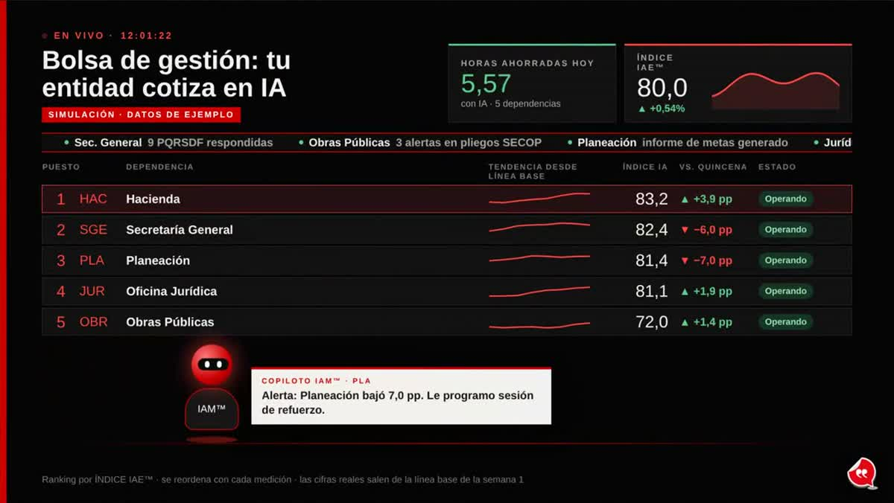

<div style="margin:0;padding:0;background:#f2efec;">
<table role="presentation" width="100%" cellpadding="0" cellspacing="0" style="background:#f2efec;padding:24px 0;"><tr><td align="center">
<table role="presentation" width="600" cellpadding="0" cellspacing="0" style="width:100%;max-width:600px;background:#ffffff;font-family:Arial,Helvetica,sans-serif;color:#1b1a1d;">
<tr><td style="background:#0b0b0c;padding:28px 32px;">
<div style="font-size:13px;letter-spacing:3px;color:#ff4d4d;font-weight:bold;">IAM™ · INTELIGENCIA ARTIFICIAL EMPRESARIAL</div>
<div style="font-size:28px;line-height:34px;color:#ffffff;font-weight:bold;padding-top:12px;">IA que se mide, para Comfandi y sus empresas afiliadas</div>
<div style="font-size:15px;line-height:22px;color:#c9c5bf;padding-top:10px;">Conferencias, formación y acompañamiento con resultado medible</div></td></tr>
<tr><td style="height:6px;background:#e00000;font-size:0;line-height:0;">&nbsp;</td></tr>
<tr><td style="padding:28px 32px 8px;font-size:16px;line-height:25px;">
<p style="margin:0 0 14px;">Buen día, equipo de Comfandi.</p>
<p style="margin:0 0 14px;">Les escribo porque acabo de cerrar un programa de inteligencia artificial con otra caja de compensación familiar, y los resultados pueden servirle a Comfandi de dos maneras: para sus propios equipos y como oferta de formación para sus empresas afiliadas.</p>
<p style="margin:0;">Soy Sandra Curvelo, fundadora de IAM™. Llevo la inteligencia artificial al trabajo real de los equipos y la mido en horas recuperadas, no en licencias compradas.</p></td></tr>
<tr><td style="padding:24px 32px 6px;"><div style="font-size:12px;letter-spacing:2px;color:#e00000;font-weight:bold;">CASO REAL · COMFACESAR, CAJA DE COMPENSACIÓN FAMILIAR</div></td></tr>
<tr><td style="padding:8px 32px;">
<table role="presentation" width="100%" cellpadding="0" cellspacing="0" style="background:#0b0b0c;"><tr>
<td width="33%" align="center" style="padding:18px 6px;"><div style="font-size:30px;font-weight:bold;color:#ffffff;">+800</div><div style="font-size:12px;line-height:16px;color:#c9c5bf;">horas al mes<br>recuperadas</div></td>
<td width="34%" align="center" style="padding:18px 6px;border-left:1px solid #333;border-right:1px solid #333;"><div style="font-size:30px;font-weight:bold;color:#ff4d4d;">4,7 → 8,6</div><div style="font-size:12px;line-height:16px;color:#c9c5bf;">confianza para usar IA<br>en 9 semanas (sobre 10)</div></td>
<td width="33%" align="center" style="padding:18px 6px;"><div style="font-size:30px;font-weight:bold;color:#ffffff;">18</div><div style="font-size:12px;line-height:16px;color:#c9c5bf;">áreas y más de<br>50 personas</div></td>
</tr></table>
<div style="font-size:14px;line-height:21px;color:#55505a;padding-top:10px;">Cada área aprendió con sus propias tareas y construyó sus tableros y agentes. En las tareas medidas, 90% menos tiempo.</div>
<div style="font-size:15px;line-height:22px;color:#1b1a1d;padding-top:10px;"><b>El retorno:</b> 255,5 horas recuperadas por semana, valoradas a la tarifa hora más baja, suman <b>$483,0 millones en 12 meses</b>. Es <b>20,1 veces</b> lo que cuestan al año las licencias de IA para 25 personas.</div></td></tr>
<tr><td style="padding:24px 32px 6px;"><div style="font-size:12px;letter-spacing:2px;color:#e00000;font-weight:bold;">ASÍ SE VE LA MEDICIÓN: EL ÍNDICE IAE™</div></td></tr>
<tr><td style="padding:8px 32px;">
<div style="font-size:12px;line-height:18px;color:#55505a;padding-top:8px;">Simulación con datos de ejemplo. Cada área aparece con su índice de uso de IA, su tendencia desde la línea base y las horas ahorradas del día. Las cifras del caso Comfacesar sí son reales.</div></td></tr>
<tr><td style="padding:24px 32px 6px;"><div style="font-size:12px;letter-spacing:2px;color:#e00000;font-weight:bold;">LO QUE PUEDO LLEVAR</div></td></tr>
<tr><td style="padding:6px 32px;"><table role="presentation" width="100%" cellpadding="0" cellspacing="0">
<tr><td style="border-left:4px solid #e00000;padding:10px 0 10px 14px;"><div style="font-size:17px;font-weight:bold;">Conferencias de IA empresarial</div><div style="font-size:14px;line-height:21px;color:#55505a;padding-top:4px;">Para gerentes y equipos: qué tareas pasarle a la IA, cómo gobernarla y cómo medir si funcionó.</div></td></tr><tr><td style="height:10px;font-size:0;">&nbsp;</td></tr>
<tr><td style="border-left:4px solid #e00000;padding:10px 0 10px 14px;"><div style="font-size:17px;font-weight:bold;">Programas de formación con resultado medible</div><div style="font-size:14px;line-height:21px;color:#55505a;padding-top:4px;">IAM™ Intelligence: 9 semanas por área, línea base tarea por tarea y el IAE™, que muestra cada semana la adopción, las horas recuperadas y la calidad. Duración, temas y formato se ajustan a cada organización.</div></td></tr><tr><td style="height:10px;font-size:0;">&nbsp;</td></tr>
<tr><td style="border-left:4px solid #e00000;padding:10px 0 10px 14px;"><div style="font-size:17px;font-weight:bold;">Ventas y marca con IA</div><div style="font-size:14px;line-height:21px;color:#55505a;padding-top:4px;">Mentoría para equipos comerciales: prospección, social selling en LinkedIn y agentes que le devuelven tiempo al vendedor.</div></td></tr><tr><td style="height:10px;font-size:0;">&nbsp;</td></tr>
</table></td></tr>
<tr><td style="padding:16px 32px 6px;font-size:16px;line-height:25px;"><p style="margin:0;">Me encantaría tener 20 minutos para mostrarles cómo se vería un programa así en Comfandi, para sus equipos internos o para sus empresas afiliadas.</p></td></tr>
<tr><td align="center" style="padding:20px 32px 28px;"><a href="https://calendly.com/sandracurvelo-mentoraventasdigitales-ia" style="display:inline-block;background:#e00000;color:#ffffff;text-decoration:none;font-weight:bold;font-size:16px;padding:14px 28px;">Agendar 20 minutos</a></td></tr>
<tr><td style="border-top:1px solid #e6e1dc;padding:20px 32px 26px;font-size:14px;line-height:21px;">
<div style="font-weight:bold;font-size:15px;">Sandra Curvelo</div>
<div style="color:#55505a;">Fundadora y CSO de IAM™ · más de 1.500 profesionales mentoreados</div>
<div style="color:#55505a;">sandracurvelo@iamlatam.co · iamlatam.co</div></td></tr>
</table></td></tr></table></div>
